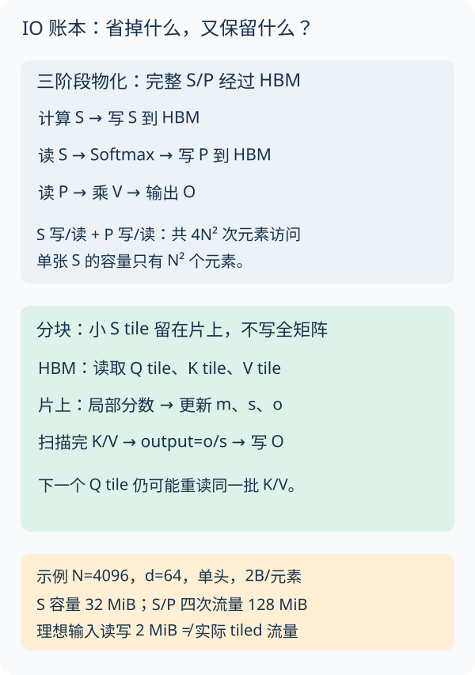
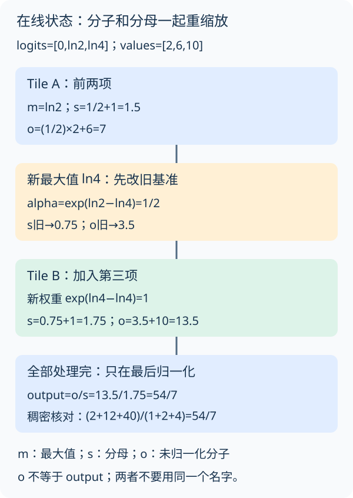

先修：L3 的在线 softmax、L5 的 S/P/O 与 causal mask。建议分两次学习，每次 60–90 分钟。本讲先推导标量状态，再推广到向量和tile；完成 Lab2 Q7/Q8 与纸面合并练习即可，不要求自己写GPU kernel。先完成L7、L8，再统一做完整HW1/HW2。
核心问题是：输出是对V的加权和，我们真的需要把每一对query-key的分数S和概率P都存到显存吗？答案不是“忽略小概率”，而是改变求和顺序，保留足以继续计算的状态。理解状态的含义，才能分清精确重排与近似算法。
1. 先把容量、流量和运算分成三本账
三阶段稠密实现是：算S并写回；读S做softmax并写P；读P乘V得到O。容量问“某个时刻需要保留多少元素”，请求流量问“这些数组共被读写多少次”，FLOPs问“做多少算术”。三者单位不同，不能拿一张矩阵的容量直接当整个过程的IO。
假定单头、sq=sk=N、d=dv，所有数组同为2字节元素，Q/K/V各读一次、O写一次，暂不计投影、缓存和额外临时值：
Q/K/V/O 容量合计：4Nd 个元素
S/P 同时保留时额外容量：2N² 个元素
S 写、S 读、P 写、P 读：4N² 次元素访问
三阶段请求流量：(4Nd + 4N²) × 2 字节
两次稠密矩阵乘：4N²d FLOPs如果复用S/P缓冲，峰值容量会不同，但不能因此把一次写和下一次读合成零流量。若中间S/P为FP32而输入为bf16，也必须分开字节数；上面统一2字节只是可检查的教学模型，不是所有库的实际实现。
案例一：先从8字节的矩阵数起
N=2、d=1、每元素2字节。Q/K/V/O合计8个元素、16B；S单张4个元素、8B，S/P同时保留16B；S/P四次访问16个元素、32B。三阶段总请求流量48B，理想不物化下界16B。若把每元素改为4字节，两数翻倍为96B和32B。这正是Lab2 Q8的小尺寸检查。
再取N=4096、d=64、仍单头2字节：S单张32MiB；S/P容量64MiB；四次访问128MiB=134,217,728B。Q/K/V/O读写合计2MiB，总请求流量130MiB。8个头时仅中间S/P访问已是1GiB。MiB使用2²⁰B，不要把128MiB写成128MB而又按十进制解释。

读图先找粗体中间数组：上半图有完整S/P跨越HBM边界，下半图只有tile和状态留在片上。下半图的K/V可能被另一个Q tile再次读取，所以“没有S/P写回”不等于“只读一次全部输入”。
2. 从L3的两个数，扩展到Attention的三个状态
固定一条query，设已看过的合法logit集合为J，某个logit记x_j，对应value向量V_j。L3用最大值m与指数和s表示softmax归一化；attention再增加一个未归一化的value加权和o：
m = max(x_j)
s = Σ exp(x_j - m) normalizer，标量
o = Σ exp(x_j - m) × V_j numerator，向量
output = o / s 已归一化的输出向量本讲中小写o永远是分子，不是最终output；s永远是normalizer，不用它表示序列长度，序列长度改写N。一些论文写l代替s，读别人的实现时先对照语义，不要仅凭字母猜。V只有一维时，o才是标量。
假如新tile的最大logit更大，旧的exp基准也得改变。设新全局最大值为m_new，则：
exp(x_j - m_new) = exp(x_j - m_old) × exp(m_old - m_new)
alpha = exp(m_old - m_new)
s_new = alpha × s_old + Σ新tile exp(x_j - m_new)
o_new = alpha × o_old + Σ新tile exp(x_j - m_new) × V_j旧分母与旧分子必须乘同一个alpha。因为二者都以同一个旧最大值为基准；只重缩放s，相当于只改变旧信息的分母，已经不再表达原来的加权平均。m变大时alpha≤1，避免对很大的正差取exp。
这就是归纳证明：旧状态准确概括已看集合；统一基准后加入新集合贡献，新状态就概括并集。全部tile结束时o/s与稠密softmax加权和相同。在实数算术中精确，浮点归约顺序不同可有小误差，不能要求bitwise相同。FlashAttention 原论文把这个思想与分块IO组织结合，避免完整中间矩阵物化。
3. 案例二：两个tile，最大值变化时怎么补偿
使用L3同一行logits [0,ln2,ln4]，增加values [2,6,10]。先将前两项当tileA，最后一项当tileB。先遮住结果，手算每一行状态。
| 步骤 | m | s：归一化分母 | o：未归一化分子 | 当前output |
|---|---|---|---|---|
| 只有第一项 | 0 | 1 | 2 | 2 |
| 看完前两项 | ln2 | 1/2+1=1.5 | (1/2)×2+6=7 | 14/3 |
| tileB到来，旧状态缩放 | ln4 | 1.5×1/2=0.75 | 7×1/2=3.5 | 此时还未加入新项 |
| 加入第三项 | ln4 | 0.75+1=1.75 | 3.5+10=13.5 | 13.5/1.75=54/7 |
直接稠密算是 (1×2+2×6+4×10)/(1+2+4)=54/7，两种路径一致。若只缩放s却不缩放o，错误输出会是 (7+10)/1.75=68/7。错误仍在2到10的值域里，因此“输出没越界”并不足以检验在线更新。

读图注意橙色缩放步骤：旧s与旧o一起乘1/2。新value10的权重是exp(ln4−ln4)=1，不是未经重标定的4。最后只除一次s；中途展示output是帮助理解，不要求每轮把已归一化结果写回。
4. 先运行一个最小toy，再扩成tile
下面只支持有限标量logit、标量value，输入已验证，不处理mask；它是状态推导的可运行练习，不是GPU实现或Lab评分接口。初始状态是最大值−inf、分母0、分子0。首项单独把旧贡献系数设0，避免无意义的初始比例。
import math
def update_state(state, score, value):
maximum, normalizer, numerator = state
new_maximum = max(maximum, score)
old_scale = 0.0 if normalizer == 0 else math.exp(maximum - new_maximum)
weight = math.exp(score - new_maximum)
return (new_maximum,
old_scale * normalizer + weight,
old_scale * numerator + weight * value)
state = (-math.inf, 0.0, 0.0)
for score, value in zip([0, math.log(2), math.log(4)], [2, 6, 10]):
state = update_state(state, score, value)
assert math.isclose(state[2] / state[1], 54 / 7)第一步逐项运行，打印每次状态，与上表对齐；第二步把value改成向量，o的每个分量都乘同一个old_scale；第三步用一个tile内的指数和、加权和替换单项weight；第四步才处理多query，每条query有自己独立的m/s/o。不要把某一行的最大值或normalizer借给另一行。
Mask带来一个必须显式处理的边界：全被mask的新tile没有贡献，直接跳过，保留旧状态；若整条query最终都无合法key，按课程契约报错。不能直接计算 -inf-(-inf) 再期待exp自然变零，它会产生NaN。同起点causal自注意力通常有对角线合法，但通用padding或矩形对齐可能打破这一前提。
5. 从一行扩展到Q tile：少存矩阵，不代表零重读
Q tile有Br行，K/V tile有Bc行。把一个Q tile留在片上，顺次扫描K/V各tile；局部分数仅为Br×Bc，算完就用于更新每个query的状态，不写完整N×N的S/P。所有K/V扫完后，输出这Br行，再换下一组query。
如果按照这种Q-major顺序，忽略边缘和缓存，Q读与O写约2Nd个元素；每个Q tile会扫一遍K/V，所以它们共约 2Nd×ceil(N/Br) 个元素。这是明确循环顺序下的模型，和“Q/K/V/O各一次”下界不是同一个数。增大Br能减少重复扫描，但还要容纳Q/K/V tile、score tile、输出累加器及m/s，不能无限增大。
原论文在两级存储及适用片上容量范围内，给出约 Θ(N²d²/M + Nd) 的元素访问量模型；M按元素计，而非字节，典型讨论区间d≤M≤Nd。固定M时仍可随N二次增长，因此把FlashAttention剩余IO直接写成O(Nd)会误导。它消除完整S/P物化并改善数据复用，但不承诺所有输入永远只访问一次。
案例三：一个可核对的重读账本
N=128、d=64、单头、2字节元素，取Br=32、共有4个Q tile。Q/O合计16,384个元素；K/V每次16,384元素，共扫4次为65,536；合计81,920元素=163,840B。理想read-once下界是65,536B，三阶段物化模型为196,608B。这个简化Q-major遍历位于两者之间；它只展示重读计数，不保证某个真实kernel恰好请求这些字节，更不宣称这个Br在任意硬件上都是最优。
Causal下还可以跳过全未来tile。例如Q tile覆盖query索引2、3，K tile覆盖4、5，则每个key都大于每个query，可整块跳过；K tile覆盖2、3时，query2只能看key2而query3可看两者，必须逐元素mask。只有Br=Bc且同起点对齐时，才可简写成“列tile编号大于行tile编号就跳过”。尾tile不足整块也要使用真实行数。
6. Decode与Split-KV：增加并行度，但合并不能丢权重
Decode的sq通常为1。按单batch、单头、bf16、d=dv、K/V各从HBM读一次并忽略小Q/O的模型：FLOPs≈4N d，字节≈4N d，AI≈1 FLOP/B。对N=4096、d=64，约1,048,576 FLOPs、1,048,576B。若低于设备匹配dtype的ridge，可判断带宽压力；但小负载也可能受启动或并行不足限制。不能从一个公式替所有部署下最终结论。
若每个head只给一个线程块，低batch/head可能没有足够并行任务。Split-KV把KV序列切成多个非空段，各段独立算 (m_r,s_r,o_r)，再合并。不是改变attention定义，也不是只保留某一段。
m = max_r(m_r)
s = Σ s_r × exp(m_r-m)
o = Σ o_r × exp(m_r-m)
output = o / s案例四：直接平均两段output，为什么错
所有logits=0。第一段只有V=0，状态(0,1,0)，output=0；第二段有三个V=4，状态(0,3,12)，output=4。直接平均两个output得2，但全体四位置应等权，真实结果 (0+4+4+4)/4=3。正确合并s=1+3=4，o=0+12=12，再除得3。
如果一段只保存了已归一化output_r，必须先乘回s_r，再乘基准转换系数，不能丢s_r。此反例检验分母权重；案例二检验不同最大值的重缩放，两类都通过才更有说服力。空段跳过，用中性状态表示而不计算−inf减−inf。
Split-KV可增加独立工作，但需要临时partial状态和最终归约，额外kernel、通信也有代价；不保证总是更快，也不保证L2命中一定提升。Paged KV改变地址映射：逻辑块经block table找物理块，再加块内偏移；具体页大小和访存合并要看实现，不能给一个全硬件通用的最优常数。
7. 算法与硬件优化分别学
FlashAttention-2主要讨论减少非matmul操作、改善thread block/warp工作划分与并行度；FlashAttention-3针对Hopper异步能力，将数据移动、矩阵乘与softmax重叠，并研究低精度设计。m/s/o不变式是理解它们的地基，不是知道几个GPU缩写就掌握了算法。
本周先不要求照着不完整CUDA片段编译：完整GPU实现还需线程间归约、同步、边缘mask和内存布局。可选实践是先用自己的Python稠密输出作oracle，再实现标量/向量在线版本，比较误差；有GPU后再测kernel，不把Python循环速度当FlashAttention性能。
若有额外完整仓库，可从attention backend、FlashMLA接口、cache_engine的paged布局读起；课程包不包含这些硬件依赖。保持提问具体：哪块数据留在片上？哪个输入被重读？合并时的o究竟是分子还是已归一化输出？
8. 自测与Lab2成本账本
基础：N=2、d=1、4字节元素时，S单张容量、S/P四次访问、总请求流量各是多少？
应用：把案例二分成三块分别处理，最终output会变吗？若只修改最后一个V为14，最终输出是多少？
解释：一个tile全mask与整条query全mask应分别怎么处理？materialized=False为什么不是实际FlashAttention HBM读写量？
展开解析
S单张16B，S/P四次64B，总流量96B。分成三块实数结果不变，都是54/7；V最后改14后为(2+12+56)/7=10。全mask的tile跳过；整条query无合法项则无法归一化，课程要求报错。False只算输入各读一次和输出写一次的下界，真实tile重读、缓存、精度和归约状态都未包含。
出口：用纸笔完成两个tile状态表、一个split反例和一张IO账本，再运行Lab2 Q7/Q8。必须同时写出“容量”“请求流量”“有效FLOPs”的单位和假设。接着完成L7的KV跨步保留与L8的量化，再统一做完整HW1/HW2；不要把今天的成本模型当成已经测完真实引擎的性能。